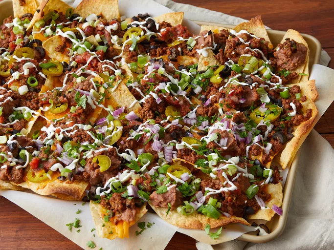

Nachos

Description
These homemade nachos are great for game day. This recipe makes a huge meal-sized tray of nachos loaded with taco-seasoned ground beef, refried beans, salsa, jalapenos, and cheese.
The secret to perfectly crispy homemade nachos? Your oven's broiler! This crowd-pleasing recipe is foolproof - and it's easy to customize with your favorite toppings.
Ingredients
- aluminum foil
- 1 pound ground beef
- 3/4 cup water
- 1.25 ounces of taco seasoning mix
- 18 ounces of restaurant-style tortilla chips
- 1 cup of shredded sharp Cheddar cheese
- 15.5 ounces of canned refried beans
- 10 ounces of can pitted black olives, drained and chopped
- 1 cup of salsa
- 1 cup of sour cream
- 4 green onions
Steps
How to make Nachos
- Preheat the oven broiler. Set the oven rack about 6 inches from the head source. Line a baking sheet with aluminum foil.
- Gather all ingredients.
- Cook and stir ground beef in a skillet over medium heat until meat is crumbly and no longer pink, 5 to 10 minutes. Drain excess grease. Stir in water and taco seasoning mix; simmer until beef mixture has thickened, 8 to 10 minutes.
- Spread tortilla chips on the prepared baking sheet. Top with Cheddar cheese, then dot with refried beans and ground beef mixture.
- Broil in the preheated oven until cheese is melted, 3 to 5 minutes. Top nachos with olives, salsa, sour cream, green onions, and jalapeno peppers.